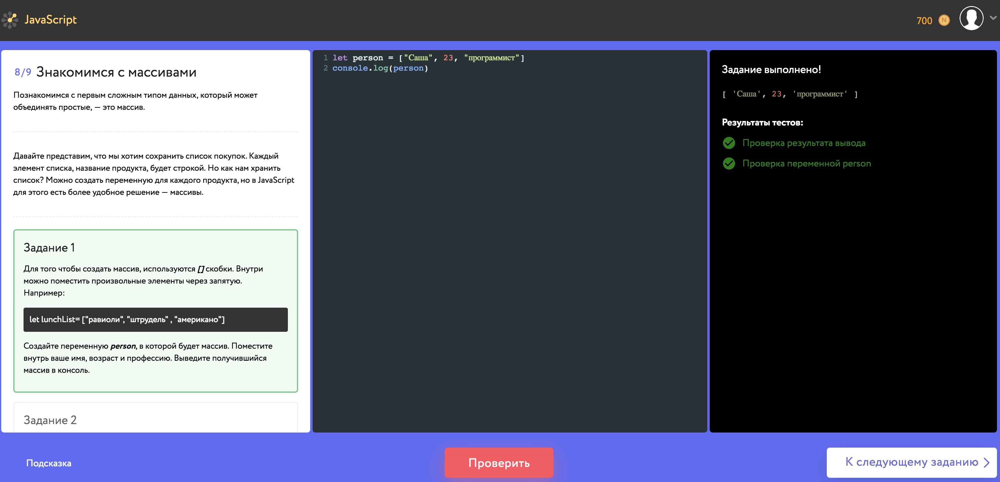
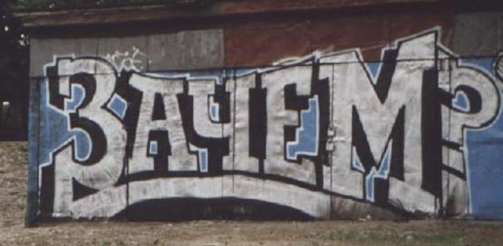

Говорим о новом
Архитектура и особенности создания интерактивных тренажеров по программированию
Автор: Давыденков Михаил
Содержание
- Все как у людей
- Кишки
- Почему так
- Мораль
- Что осталось за кадром
Как у людей
Как у людей
Как у людей
Кодскул все видели, а кто-то там был когда-то в ТОПе :)
В Нетологии
А что внутри?

Docker entrypoint
А что с деплоем?
А что с деплоем?
Ну и зачем же вы притащили эликсир?:w
Ну и зачем же вы притащили эликсир?:w
- Механизм портов предоставляет возможность писать меньше кода при работе с созависимыми процессами
- Маленький рантайм позволяет сделать контейнер приложения минимального размера
- Докер сворм позволяет заскейлить выполнение кода независимо от основного приложения (возможен мультинодовый сетап с абстракцией над сетью c рескейлингом на лету, если машины в одной подсети)
- Есть пространство для маневра и расширения приложения для других рантаймов (отдельный контейнер для JS, отдельный для Ruby, отдельный для Python и тд)
Суть

Мораль
- Знать сильные и слабые стороны инструментов, с которыми работаешь
- Делать просто, но стараться не говнокодить
- Изучать опыт коллег
- Думать о границах
- Мыслить категориями сервисов